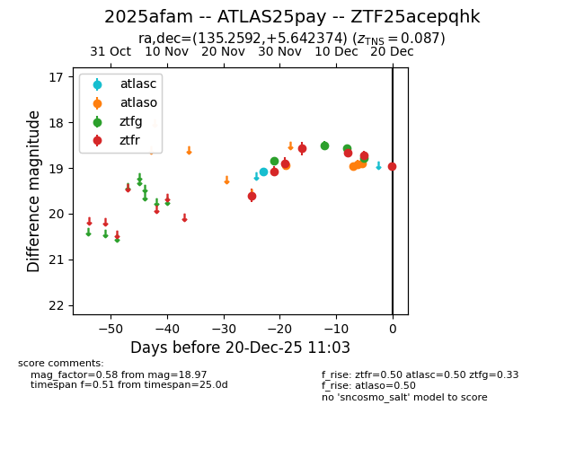
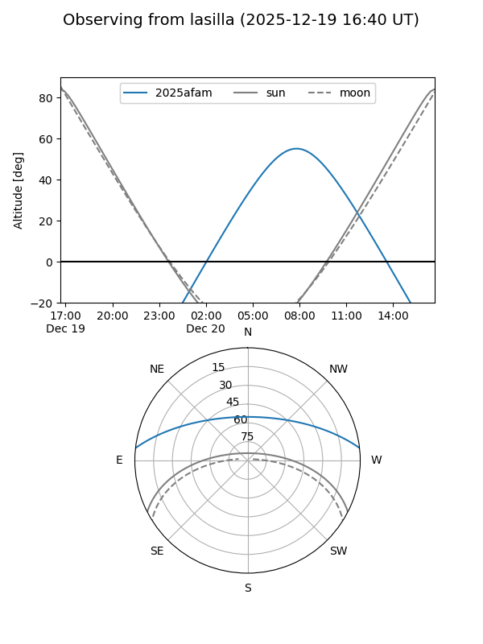
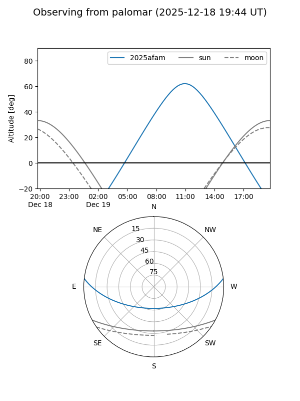

2025afam
Target 2025afam at 2025-12-22 19:26
Aliases and brokers:
FINK: fink-portal.org/ZTF25acepqhk
Lasair: lasair-ztf.lsst.ac.uk/objects/ZTF25acepqhk
ALeRCE: alerce.online/object/ZTF25acepqhk
TNS: wis-tns.org/object/2025afam
YSE: ziggy.ucolick.org/yse/transient_detail/2025afam
alt names
ZTF25acepqhk (ztf,fink_ztf)
2025afam (tns,yse)
ATLAS25pay (atlas)
Coordinates:
equatorial (ra, dec) = 135.2592,+5.64237
equatorial (HMS+DMS) = 09:01:02.21,+05:38:32.54
galactic (l, b) = (223.4260,+31.29182)
Flags:
confirmed ia
Photometry:
last atlasc=19.09, atlaso=18.95, ztfg=18.78, ztfr=19.11
1 atlasc, 6 atlaso, 4 ztfg, 8 ztfr detections
Lightcurve

Visibility


Additional plots